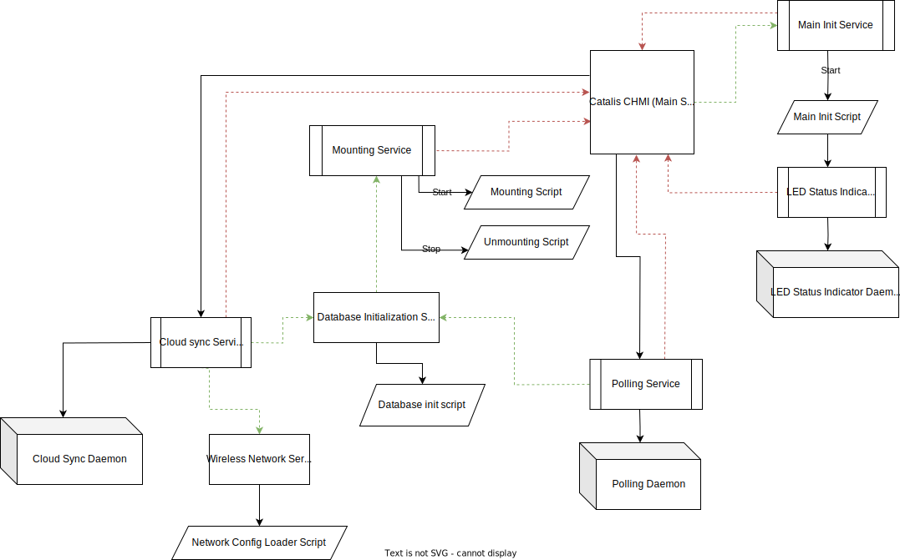

The CloudHMI (CHMI) software is a suite of Systemd services and daemons running on Debian 12 (Linux) for the Raspberry Pi, on a Raspberry Pi 4 (4 GB variant) gateway device. The primary aims of the system being:
This documentation explains the service ecosystem that enables the Raspberry Pi to operate as a gateway device, and briefly touches upon operator work flow in the context of the USB "key". For documentation regarding operator work flow, refer to the operator documentation.
The suite runs on a Raspberry Pi 4 (4 GB RAM) single-board ARM64 computer. The primary storage device is a removable 32 GB SD card on the underside of the board, which contains the Linux file system. Various other ports (HDMI, USB type-A, ethernet, etc.) are provided for connecting external devices. The Pi is powered solely by 5 volts regulated DC input via a type-C USB connector.
The Raspberry Pi exposes a number of General-Purpose Input/Output (GPIO) pins, a number of which have been used to drive physical LED service status indicators. Support for a real-time clock will also be via these pins.
This section describes the structure of the project directory (https://github.com/Positron11/cloud-hmi).
/docsContains this and other documentation.
/packagesContains the source for (at present, only) the CatalisUtils python package which provides various general utilities (daemon management, database handling, etc.) to the daemons in the CloudHMI ecosystem.
/virtual/rootThe /virtual base directory is an artifact of the development process and as such has no significance in the project directory - simply /root would have sufficed.
`-- virtual
|-- requirements.txt
`-- root
|-- etc
| |-- catalis
| | `-- global.conf
| |-- network
| | `-- interfaces
| |-- systemd
| | `-- system
| | |-- catalis-chmi@.service
| | |-- catalis-csync@.service
| | |-- catalis-dbinit@.service
| | |-- catalis-init@.service
| | |-- catalis-led@.service
| | |-- catalis-mount@.service
| | |-- catalis-poll@.service
| | `-- catalis-wireless@.service
| `-- udev
| `-- rules.d
| `-- catalis-mount.rules
`-- usr
`-- sbin
|-- catalis-csync
|-- catalis-dbinit
|-- catalis-init
|-- catalis-led
|-- catalis-main
|-- catalis-mount
|-- catalis-poll
|-- catalis-unmount
`-- catalis-wireless
The /virtual/root subdirectory acts as a proxy subset of the root directory (/) of the file system on the Raspberry Pi. File locations are a direct mapping, eg. to install /virtual/root/usr/sbin/catalis-csync from the project directory, you would copy it to /usr/sbin/catalis-csync on the Raspberry Pi.
Besides the obvious mapping described above, note that all scripts in /usr/sbin must be given execute permissions. Python dependencies are provided in /virtual/requirements.txt. Python modules are installed system-wide with pip and the --break-system-packages flag (externally managed environment). A symbolic link to the latest binary of python needs to be created at /bin/python.
Services define their own environment variables for any spawned scripts. A global configuration file common to multiple services is found at /etc/catalis/global.conf:
CATALIS_DB_PATTERN="polldata-hmi#$HMID"
CATALIS_DB_BUSY_RETRY_INTERVAL="10"
(Additional service-specific environment files are located in the config/ directory of the default key mountpoint - see the section on the mounting service). The global configuration defines file system variables and variables accessed by the CatalisUtils python package. Service-specific environment files define variables that control the general operation of main services in terms of timing, API access, etc. (see service specifics).
The service suite is automatically activated upon the insertion of a USB external storage device (thumb drive), containing a partition with a vfat file system labeled CAT-xxxxxxxx, replacing each x with a single digit to create a seven-digit unique identification corresponding to the Catalis machine's serial code.
Essentially: the system is active as long as the key is inserted.
The activation mechanism is defined in /etd/udev/rules.d/catalis-mount.rules, and is facilitated by the udev device manager:
ACTION=="add", KERNEL=="sd*", ENV{ID_FS_LABEL}=="CAT-[0-9][0-9][0-9][0-9][0-9][0-9][0-9]", TAG+="systemd", ENV{SYSTEMD_WANTS}="catalis-chmi@%k.service"
ACTION=="remove", KERNEL=="sd*", ENV{ID_FS_LABEL}=="CAT-[0-9][0-9][0-9][0-9][0-9][0-9][0-9]", TAG+="systemd", RUN+="/bin/systemctl stop catalis-chmi@%k.service"
The rules specify that inserting a valid USB "key" will trigger the catalis-chmi@<identifier>.service, where <identifier> corresponds to the /dev/sdxx device identifier of the key, and removing the key will stop the same service.
Data is structured in poll "packets". A packet is a named, timestamped array of predefined register-value pairs. Packets are defined in config/packet.conf in the mount directory like so:
[report]
Frequency=30
Addresses=2000,2001,2002
Where Frequency specifies how often this specific packet (report, in this case) is polled for, and Addresses defines the registers polled as part of this packet.
Polling data is stored on a SQLite3 database on the key, where it is written to and read from during active operation. Write-ahead logging has not been enabled due to the hot-plug nature of the key. Data integrity is nearly guaranteed - a near-zero chance of corruption due to possible interrupted read-write operations to the database during the hot-plugging phase of the work flow.
The database contains a packets table for poll data and a meta table for database meta-data - at present, primarily the last-synced (with the cloud) state of the database. packets stores timestamps in the UNIX time stamp format, and polled register data in JSON format.
ID Timestamp Type Data
9 1703613786 report {"2000":24, "2001":998, "2005":0}
A static IP for the primary wired network interface is necessary to allow communication with the HMI (must be on the same subnet). The following network configuration file is provided in the project directory:
# interfaces(5) file used by ifup(8) and ifdown(8)
allow-hotplug eth0
iface eth0 inet static
address 192.168.1.1
netmask 255.255.255.0
auto wlan0
allow-hotplug wlan0
iface wlan0 inet dhcp
wpa-conf /srv/CatalisDATA/config/wireless.conf
The wired interface (eth0) has been assigned a static IP of 192.168.1.1 here, for an HMI at 192.168.1.x For wireless network configuration, see the wireless connectivity daemon.

Services run on the Systemd service manager framework, and are defined as Systemd units (located in /etc/systemd/system/). The general dependency + calling relationship diagram above visually describes the Catalis CHMI service ecosystem. The legend for components is as follows:
The legend for relationships is as follows:
All scripts executed by services are located in /usr/sbin/. As a general rules, plain scripts are written in bash, and daemons in Python.
catalis-chmi@.serviceThe primary service of the ecosystem. Started upon insertion of the key, and stopped upon removal. Most services in the ecosystem bind to this service (ie. stopping this service propagates to most child services). Requires the main initialization service to successfully run before it runs itself. Executes catalis-chmi to spawn the polling and cloud sync daemons.
catalis-init@.serviceRuns once at startup before the primary service, and stays alive until the primary service is stopped. Executes catalis-init at startup to start the LED status indicator service.
catalis-led@.serviceCalled by the main initialization service, spawns a daemon that asynchronously scans various groups of system statuses (service status, network connectivity, etc.) and controls corresponding physical indicator lights via GPIO.
All services are assigned green and red LED indicators, corresponding to active and failed states respectively. Network connectivity is indicated like so:
catalis-poll@.serviceCalled by the primary service, requires the database initialization service to run before it runs itself.
Spawns a polling daemon that polls an HMI connected to the Raspberry Pi by ethernet cable, over TCP via the MODBUS protocol, and writes poll data to a database on the USB key. Loads process configuration variables from config/polling.conf in the mount directory:
CATALIS_HMI_HOST="192.168.1.3"
CATALIS_POLLING_FREQUENCY="1"
CATALIS_POLL_RETRY_INTERVAL="10"
Loss of connectivity with the HMI (faulty ethernet connection, etc.) is a blocking, but non-fatal error. Inability to write to the database is a fatal error, indicative of either mangled file system permissions (Read Only) or database deletion.
The polling daemon manages its own physical loss-of-connection warning indicator - a yellow LED in the polling service status indicator LED cluster.
Packets are polled pseudo-asynchronously, by running a loop at a (high) base polling frequency, and checking if the difference between the current time and the last polled time of each packet defined in config/packet.conf in the mount directory is greater than the frequency assigned to each packet.
catalis-csync@.serviceCalled by the primary service, requires the database initialization service and the wireless connectivity service to run before it runs itself.
Spawns a daemon that fetches the latest data from the poll data database on the USB key in batches and uploads these "bundles" to a cloud database via POST request to an API endpoint defined in the cloud sync configuration file (located at config/csync.conf in the mount directory):
CATALIS_SYNCING_FREQUENCY="120"
CATALIS_SYNC_REQUEST_RETRY_INTERVAL="30"
CATALIS_SYNC_MAX_PAYLOAD="250"
CATALIS_CSYNC_API_ENDPOINT="https://cloud.catalis.com/api/sync"
Keeping track of the "latest" data is done by storing a last-synced state in the database's meta table, selecting all entries newer than this state, and updating the state to the latest state upon a successful POST request to the endpoint.
A MAX_PAYLOAD variable is configured to limit the maximum size of upload bundles to avoid overloading the server.
A failed POST request is a blocking, but non-fatal error. Inability to write to the database is a fatal error, indicative of either mangled file system permissions (Read Only) or database deletion. A URL with an invalid schema specified in the configuration file is also a fatal error.
The polling daemon manages its own physical failed-sync warning indicator - a yellow LED in the polling service status indicator LED cluster.
catalis-dbinit@.serviceRequired by both the polling and the cloud sync services. Runs as a one-off service, and executes catalis-dbinit to:
packets table (if it doesn't already exist)meta table (if it doesn't already exist)meta table with default values (if they haven't already been set)catalis-wireless@.serviceRequired by the cloud sync service, and requires the mount service. Runs as a one-off service, and facilitates connection to a WPA2-PSK wireless network by simply reloading the system network service once the key has been mounted to ensure the wpa_supplicant configuration file specified in /etc/network/interfaces has been loaded. The contents of wireless.conf in the mount directory being the following:
network={
ssid="ssid-name"
psk="wpa-key"
}
Note that the successful running of this service does not guarantee that the Raspberry Pi is connected to a network - only that it has tried, as instructed by wireless.conf. An incorrect configuration file may require re-inserting the key with a correct configuration file. Any other connection errors are likely externally caused.
catalis-mount@.serviceRequired by the database initialization and wireless connectivity services. Runs once and stays alive until the primary service is stopped, at which time it performs a cleanup function. Executes catalis-mount at startup, which creates the mountpoint (/srv/CatalisDATA/), and mounts the key at the mountpoint.
When the service is stopped by propagation from the primary service, the service executes catalis-unmount to unmount the mountpoint from the root filesystem and delete the mountpoint.